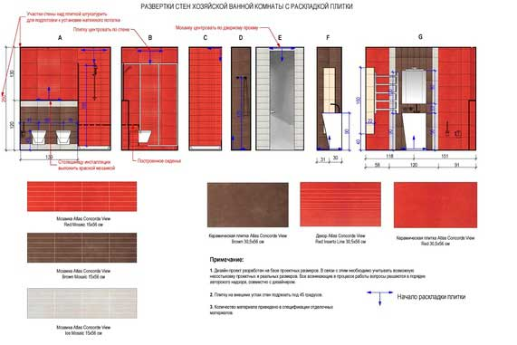

Развертки стен с раскладкой плитки

Спочатку для дизайн-проекту вибирається кілька колекцій плитки, на основі яких потім робляться перші варіанти розкладок, що дозволяють остаточно визначитися з конкретною колекцією, кольоровою гамою і самим видом майбутньої розкладки - вертикальна, горизонтальна, зі зміщенням, і так далі. Паралельно має стати зрозумілим кількість декорів в майбутньої розкладці, оскільки від цього безпосередньо залежить підсумкова вартість необхідних матеріалів. Для будівельників дана розгортка послужить керівництвом при укладанні плитки, наочно демонструючи як точку початку розкладки, так і розташування окремих елементів щодо стін, сантехнічного обладнання і один одного.